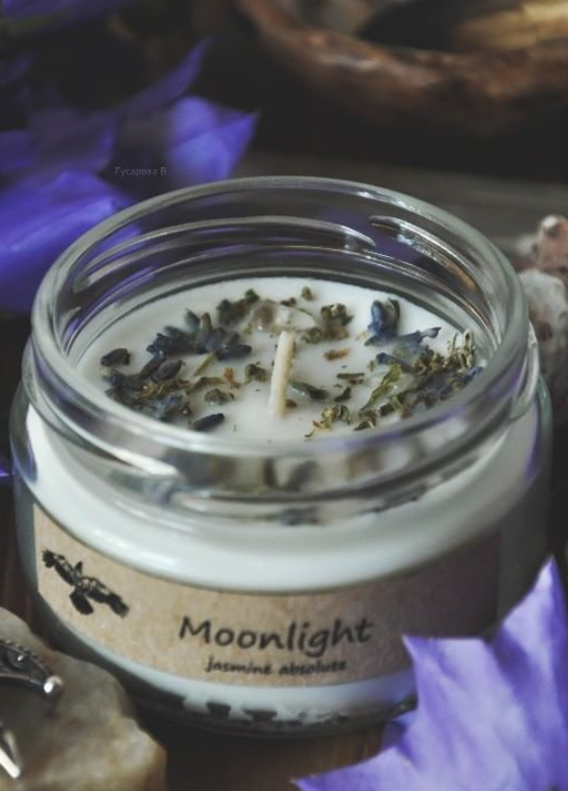

ABOUT OUR BRAND
Our brand cosmetics are made from natural ingredients and we are promoting them to the masses. Shampoo, hair conditioner, soap - in recycled paper. Creams, oils, washing products in glass containers with recycled paper labels. No synthetics and microplastics in cosmetics. And the packaging from it can be returned for recycling or reused.
We are all neighbors of one big House. And we must protect what we have. Destroying everything around for the sake of consumerism and imaginary convenience, we destroy what does not belong to us. Be aware of your choice!
LEARN MORE
ABOUT THE CREATORS
My name is Victoria. I'm a master at candle making and natural cosmetics. In the past, a cynologist, was engaged in herbs, made layouts on the Tarot.
I am also a volunteer to save wild birds in distress, a consultant to the Phoenix Wildlife Rehabilitation Center, a member of the Society for the Conservation of Birds of Ukraine with the support of BirdLife International.
My husband and I live in the Carpathian region in the city of Chemivtsi. I dream of my center for the rehabilitation of wild birds, as it is very difficult to rescue birds in a rented communal apartment.
LEARN MORE